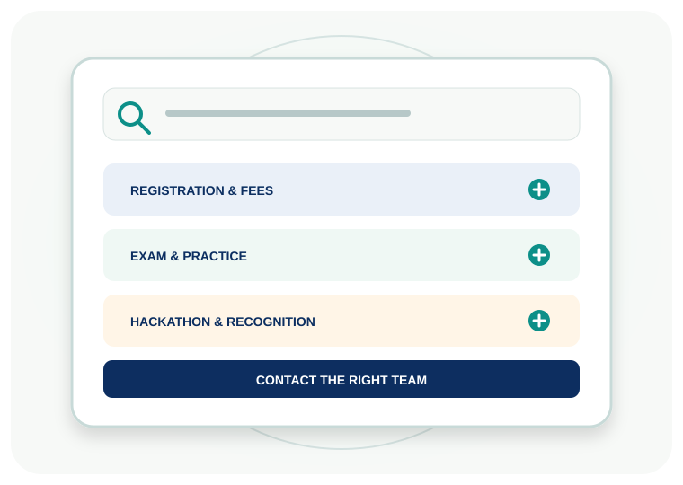

Clear answers.
Confident preparation.
Find practical information about registration, the four assessment pathways, practice tests and the Healthcare Innovation Hackathon.

Frequently asked questions
Information is subject to final organiser approvals and official event updates.
Registration & eligibility
What are the registration categories?
There are three categories: Nursing (₹250), Paramedical (₹250) and Medical (₹500). Medical candidates select Undergraduate (UG) or Postgraduate (PG) as a sub-category.
What is the difference between a registration category and an assessment pathway?
Nursing and Paramedical each have one assessment pathway. Medical is one registration category with two separate assessment pathways: Medical UG and Medical PG.
Which year should I select?
Select your current course year. Nursing programme duration varies by programme. Medical UG currently accepts Years 1–5, while Medical PG accepts Years 1–3 in the registration form.
What is required for email verification?
Provide a working email address and enter the one-time code sent to that address. Keep access to the email account until verification is complete.
Exam & practice
What is the confirmed official exam format?
The organiser-confirmed format is 100 MCQs in approximately 47 minutes. Correct answer: +1; incorrect answer: −0.25; unanswered: 0. Final scores are calculated by the assessment server.
Are the four mock tests different?
Yes. Nursing, Paramedical, Medical UG and Medical PG each have a separate 100-question practice bank, mapped to their own published syllabus and subject areas.
Is the Medical PG mock specialty-specific?
No. The initial PG practice paper is a broad cross-disciplinary clinical-foundations sampler. Postgraduate training is specialty-specific; a specialty-wise mock requires the candidate's specialty and an approved specialty blueprint.
Are sample questions official examination questions?
No. Sample questions and practice mock questions are illustrative learning material. They are not disclosed official examination questions or a promise of exact live-paper coverage.
Can I return to a previous question in the official exam?
The current exam engine uses sequential question delivery. The final candidate instructions, including navigation and interruption rules, will be displayed before the exam after organiser approval.
Hackathon & recognition
When is the Hackathon project submission deadline?
The planned project upload deadline is 27 November 2026. Selected teams will be contacted by email.
When will selected teams present their prototypes?
Selected projects are planned to present prototypes on 4 December 2026. The exact presentation schedule and venue must be confirmed by the organiser.
What do the top three Hackathon teams receive?
The recognition structure includes cash awards, completion certificates and mementos for the top three teams. Award amounts and detailed terms will be published after formal approval.
What is the QualiNova Startup Launchpad?
It is a proposed support pathway for selected ideas, including technical and product-development guidance, healthcare mentorship, financial and administrative guidance, and possible seed-funding support. Support is subject to selection, feasibility, milestones and written terms; it is not an unconditional funding guarantee.
What are BCMR credit points?
The assessment recognition plan refers to four BCMR credit points. Eligibility, the applicable authority and formal approval conditions must be verified before credit points can be treated as guaranteed.
Results & support
When will official results be published?
The organiser will announce the result-release schedule. The final results are subject to organiser approval and the event's published result policy.
Who should I contact for help?
Contact QualiNova for event, eligibility, syllabus, awards and Hackathon decisions. Contact SUTRAVYA for technical access or platform issues. Verified contact information is available on the Contact page.
No matching questions. Try another keyword or contact the support team.